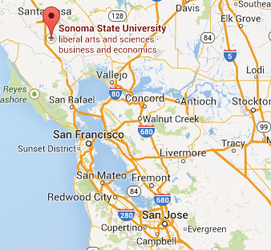
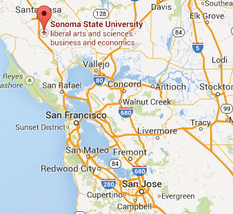
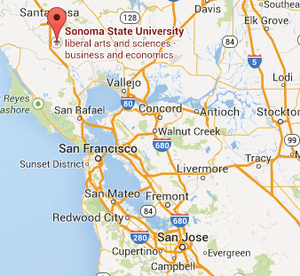

風景優美，氣候宜人
 

Sonoma州立大學(簡稱SSU)位於以釀酒聞名的Sonoma山谷，風景優美，氣候宜人。校區在舊金山以北五十英哩，由南灣啟程約為二小時的車程(建議由880N，轉980E，接580W，再接101北上)。Driving Direction


Date: 8/3/2018 (Fri, 11:30am) – 8/5/2018 (Sun, 1pm) | Location: Sonoma State University

Sonoma州立大學(簡稱SSU)位於以釀酒聞名的Sonoma山谷，風景優美，氣候宜人。校區在舊金山以北五十英哩，由南灣啟程約為二小時的車程(建議由880N，轉980E，接580W，再接101北上)。Driving Direction
今年的退修會共分中文堂和英文堂两部分。兒童節目由CEF老師帶領，分為3到5歲(必須Potty-trained)、一到三年級、四到六年級共三班。為事先預備教材及確保教學品質，參加的兒童均須事先報名，大會不提供臨時出席的兒童節目。大會報到時間為週五11：30至下午三時，當日午餐由各人自備。主題信息第一堂由下午三時開始。詳情請看日程表 Schedule。
今年共有四項專題。弟兄姊妹可依據個人的時間及需要，選擇參加一項或兩項專題。與英文堂成人合辦的專題，將以英語舉行，也歡迎弟兄姊妹參加。為了教室場地的分配及事先預備講義，請在報名時圈選所欲參加的專題。大會並不保證臨時參加者的席位及講義。


SSU提供我們套房式的住宿，每間單人或雙人房均有自用的浴廁設備，SSU會為我們準備床單、床毯、手巾、浴巾、香皂等。每四個房間為一單元，共用客廳、餐廳、及廚房。弟兄姊妹在報名時可將此因素考慮在內，使彼此之間有更多交通分享的時間。請注意保持住處，特別是廚房的清潔。若被徵收清潔費，將由各人自行負責。此外，各住宿單位嚴禁訪客留宿，請遵守SSU及大會規定。
弟兄姊妹可隨時上網www.hoc.org，查詢與退修會有關資訊。若有任何問題，或是需要協助之處，請與各家退修會同工聯絡。